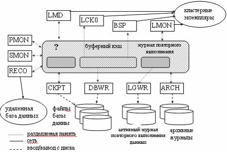
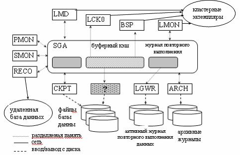

Какая область системы соответствует заштрихованному блоку из на схеме?

SGA - глобальная область системы
PGA - глобальная область процесса
UGA - глобальная область пользователя
Создание нескольких табличных пространств позволяет достичь следующих целей:
Выполнить настройку производительности приложений путем распределения объектов по табличным пространствам
Обеспечить возможность переноса приложения на более мощную компьютерную платформу
Определить разные параметры распределения памяти, применяемые по умолчанию.
Все перечисленное
Какой из обязательных процессов не указан на схеме?

PMON (монитор процессов)
DBWR (запись блоков базы данных)
QMNn (монитор очередей)
SNPn (обработка списков)
Какой процесс выполняет автоматическое восстановление экземпляра?
PMON
ARCH
SMON
DBWR
Когда освобождаются экстенты?
Только при удалении таблицы.
При автоматическом освобождении экстентов (при превышении размеров сегмента отката)
Толька при удалении индексов или ассоциированных таблиц.
Для чего администратор базы данных не может использовать табличные пространства?
Для управления распределением памяти для объектов базы данных.
Для резервного копирования данных.
Для установления квот памяти для пользователей базы данных.
Для управления доступностью данных путем перевода отдельных табличных пространств в состояния online или offline.
Для распределения данных по устройствам для повышения производительности.
Для копирования и восстановления данных.
Для хранения словарей базы данных.
Какие из приведенных высказываний неверны?
Файлы данных табличного пространства физически хранят соответствующие данные базы данных на диске.
Сегмент объекта может размещаться лишь в одном табличном пространстве базы данных.
Пространство для сегмента данных таблицы распределяется лишь в одном файле данных.
Каждое табличное пространство базы данных ORACLE составлено из одного или нескольких файлов данных.
При создании объекта схемы, такого как таблица или индекс, не создается автоматически сегмент этого объекта в табличном пространстве базы данных.
Что представляет специфическое число смежных блоков данных, распределяемых для хранения специфического типа информации?
Экстент
Сегмент
Разделяемый пул
Блоки данных
Какие параметры используется для оптимизации использования пространства в блоках данных экстентов внутри сегмента данных?
Только PCTFREE
Только PCTUSED
PCTFREE, PCTUSED
FREELISTS
MINEXTENTS, MAXEXTENTS
INITRANS
Какие области памяти используются для кэширования информации словаря данных?
Кэш буфер базы данных.
PGA
Журнальный буфер.
Разделяемый пул.